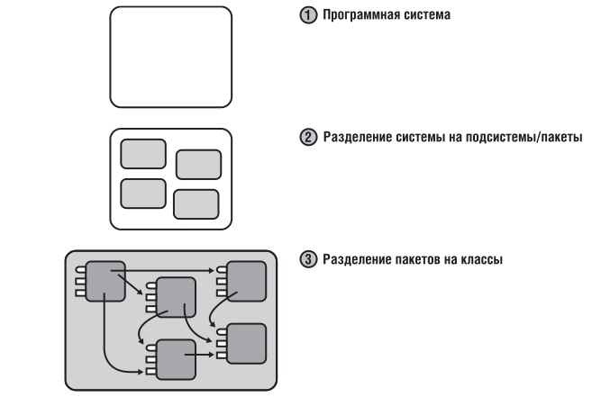
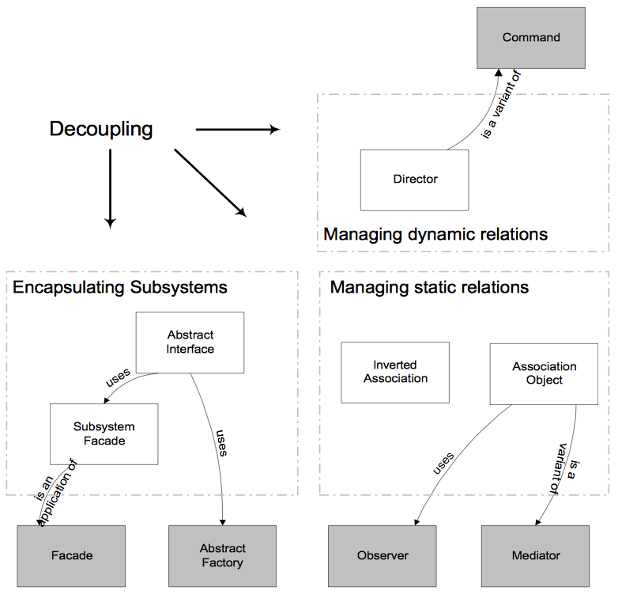
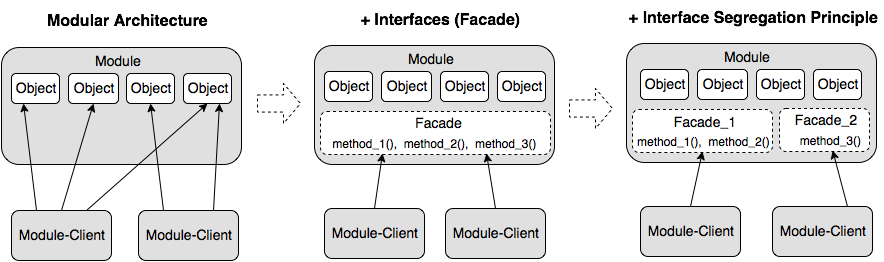
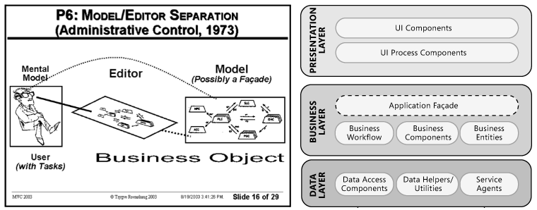
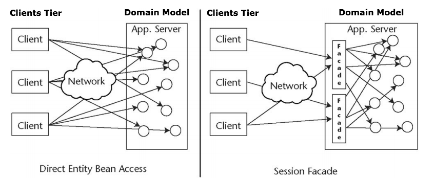
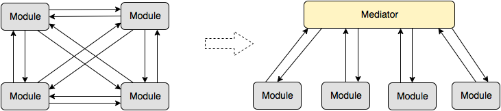

Создание архитектуры. Общие принципы
Здесь я просто дам ссылку на статью cobiot, опубликованную на хабре.
Лично для меня это статья является мини библией, теорией, и я рекомендую сохранить ее в закладки после прочтения.
Создание архитектуры программы или как проектировать табуретку
Взявшись за написание небольшого, но реального и растущего проекта, мы «на собственной шкуре» убедились, насколько важно то, чтобы программа не только хорошо работала, но и была хорошо организована. Не верьте, что продуманная архитектура нужна только большим проектам (просто для больших проектов «смертельность» отсутствия архитектуры очевидна). Сложность, как правило, растет гораздо быстрее размеров программы. И если не позаботиться об этом заранее, то довольно быстро наступает момент, когда ты перестаешь ее контролировать. Правильная архитектура экономит очень много сил, времени и денег. А нередко вообще определяет то, выживет ваш проект или нет. И даже если речь идет всего лишь о «построении табуретки» все равно вначале очень полезно ее спроектировать.
К моему удивлению оказалось, что на вроде бы актуальный вопрос: «Как построить хорошую/красивую архитектуру ПО?» — не так легко найти ответ. Не смотря на то, что есть много книг и статей, посвященных и шаблонам проектирования и принципам проектирования, например, принципам SOLID (кратко описаны тут, подробно и с примерами можно посмотреть тут, тут и тут) и тому, как правильно оформлять код, все равно оставалось чувство, что чего-то важного не хватает. Это было похоже на то, как если бы вам дали множество замечательных и полезных инструментов, но забыли главное — объяснить, а как же «проектировать табуретку».
Хотелось разобраться, что вообще в себя включает процесс создания архитектуры программы, какие задачи при этом решаются, какие критерии используются (чтобы правила и принципы перестали быть всего лишь догмами, а стали бы понятны их логика и назначение). Тогда будет понятнее и какие инструменты лучше использовать в том или ином случае.
Данная статья является попыткой ответить на эти вопросы хотя бы в первом приближении. Материал собирался для себя, но, может, он окажется полезен кому-то еще. Мне данная работа позволила не только узнать много нового, но и в ином контексте взглянуть на кажущиеся уже почти банальными основные принципы ООП и по настоящему оценить их важность.
Информации оказалось довольно много, поэтому приведены лишь общая идея и краткие описания, дающие начальное представление о теме и понимание, где искать дальше.
Критерии хорошей архитектуры
Вообще говоря, не существует общепринятого термина «архитектура программного обеспечения». Тем не менее, когда дело касается практики, то для большинства разработчиков и так понятно какой код является хорошим, а какой плохим. Хорошая архитектура это прежде всего выгодная архитектура, делающая процесс разработки и сопровождения программы более простым и эффективным. Программу с хорошей архитектурой легче расширять и изменять, а также тестировать, отлаживать и понимать. То есть, на самом деле можно сформулировать список вполне разумных и универсальных критериев:
- Эффективность системы. В первую очередь программа, конечно же, должна решать поставленные задачи и хорошо выполнять свои функции, причем в различных условиях. Сюда можно отнести такие характеристики, как надежность, безопасность, производительность, способность справляться с увеличением нагрузки (масштабируемость) и т.п.
- Гибкость системы. Любое приложение приходится менять со временем — изменяются требования, добавляются новые. Чем быстрее и удобнее можно внести изменения в существующий функционал, чем меньше проблем и ошибок это вызовет — тем гибче и конкурентоспособнее система. Поэтому в процессе разработки старайтесь оценивать то, что получается, на предмет того, как вам это потом, возможно, придется менять. Спросите у себя: «А что будет, если текущее архитектурное решение окажется неверным?», «Какое количество кода подвергнется при этом изменениям?». Изменение одного фрагмента системы не должно влиять на ее другие фрагменты. По возможности, архитектурные решения не должны «вырубаться в камне», и последствия архитектурных ошибок должны быть в разумной степени ограничены. "Хорошая архитектура позволяет ОТКЛАДЫВАТЬ принятие ключевых решений" (Боб Мартин) и минимизирует «цену» ошибок.
- Расширяемость системы. Возможность добавлять в систему новые сущности и функции, не нарушая ее основной структуры. На начальном этапе в систему имеет смысл закладывать лишь основной и самый необходимый функционал (принцип YAGNI — you ain’t gonna need it, «Вам это не понадобится») Но при этом архитектура должна позволять легко наращивать дополнительный функционал по мере необходимости. Причем так, чтобы внесение наиболее вероятных изменений требовало наименьших усилии.
Требование, чтобы архитектура системы обладала гибкостью и расширяемостью (то есть была способна к изменениям и эволюции) является настолько важным, что оно даже сформулировано в виде отдельного принципа — «Принципа открытости/закрытости» (Open-Closed Principle — второй из пяти принципов SOLID): Программные сущности (классы, модули, функции и т.п.) должны быть открытыми для расширения, но закрытыми для модификации.
Иными словами: Должна быть возможность расширить/изменить поведение системы без изменения/переписывания уже существующих частей системы.
Это означает, что приложение следует проектировать так, чтобы изменение его поведения и добавление новой функциональности достигалось бы за счет написания нового кода (расширения), и при этом не приходилось бы менять уже существующий код. В таком случае появление новых требований не повлечет за собой модификацию существующей логики, а сможет быть реализовано прежде всего за счет ее расширения. Именно этот принцип является основой «плагинной архитектуры» (Plugin Architecture). О том, за счет каких техник это может быть достигнуто, будет рассказано дальше.
- Масштабируемость процесса разработки. Возможность сократить срок разработки за счёт добавления к проекту новых людей. Архитектура должна позволять распараллелить процесс разработки, так чтобы множество людей могли работать над программой одновременно.
- Тестируемость. Код, который легче тестировать, будет содержать меньше ошибок и надежнее работать. Но тесты не только улучшают качество кода. Многие разработчики приходят к выводу, что требование «хорошей тестируемости» является также направляющей силой, автоматически ведущей к хорошему дизайну, и одновременно одним из важнейших критериев, позволяющих оценить его качество: "Используйте принцип «тестируемости» класса в качестве «лакмусовой бумажки» хорошего дизайна класса. Даже если вы не напишите ни строчки тестового кода, ответ на этот вопрос в 90% случаев поможет понять, насколько все «хорошо» или «плохо» с его дизайном" (Идеальная архитектура). Существует целая методология разработки программ на основе тестов, которая так и называется — Разработка через тестирование (Test-Driven Development, TDD).
- Возможность повторного использования. Систему желательно проектировать так, чтобы ее фрагменты можно было повторно использовать в других системах.
- Хорошо структурированный, читаемый и понятный код. Сопровождаемость. Над программой, как правило, работает множество людей — одни уходят, приходят новые. После написания сопровождать программу тоже, как правило, приходится людям, не участвовавшем в ее разработке. Поэтому хорошая архитектура должна давать возможность относительно легко и быстро разобраться в системе новым людям. Проект должен быть хорошо структурирован, не содержать дублирования, иметь хорошо оформленный код и желательно документацию. И по возможности в системе лучше применять стандартные, общепринятые решения привычные для программистов. Чем экзотичнее система, тем сложнее ее понять другим (Принцип наименьшего удивления — Principle of least astonishment. Обычно, он используется в отношении пользовательского интерфейса, но применим и к написанию кода).
Ну и для полноты критерии плохого дизайна: 1. Его тяжело изменить, поскольку любое изменение влияет на слишком большое количество других частей системы. (Жесткость, Rigidity). 2. При внесении изменений неожиданно ломаются другие части системы. (Хрупкость, Fragility). 3. Код тяжело использовать повторно в другом приложении, поскольку его слишком тяжело «выпутать» из текущего приложения. (Неподвижность, Immobility).
Модульная архитектура. Декомпозиция как основа

Не смотря на разнообразие критериев, все же главной при разработке больших систем считается задача снижения сложности. А для снижения сложности ничего, кроме деления на части, пока не придумано. Иногда это называют принципом «разделяй и властвуй» (divide et impera), но по сути речь идет об иерархической декомпозиции. Сложная система должна строится из небольшого количества более простых подсистем, каждая из которых, в свою очередь, строится из частей меньшего размера, и т.д., до тех пор, пока самые небольшие части не будут достаточно просты для непосредственного понимания и создания.
Удача заключается в том, что данное решение является не только единственно известным, но и универсальным. Помимо снижения сложности, оно одновременно обеспечивает гибкость системы, дает хорошие возможности для масштабирования, а также позволяет повышать устойчивость за счет дублирования критически важных частей.
Соответственно, когда речь идет о построении архитектуры программы, создании ее структуры, под этим, главным образом, подразумевается декомпозиция программы на подсистемы (функциональные модули, сервисы, слои, подпрограммы) и организация их взаимодействия друг с другом и внешним миром. Причем, чем более независимы подсистемы, тем безопаснее сосредоточиться на разработке каждой из них в отдельности в конкретный момент времени и при этом не заботиться обо всех остальных частях.
В этом случае программа из «спагетти-кода» превращается в конструктор, состоящий из набора модулей/подпрограмм, взаимодействующих друг с другом по хорошо определенным и простым правилам, что собственно и позволяет контролировать ее сложность, а также дает возможность получить все те преимущества, которые обычно соотносятся с понятием хорошая архитектура: Масштабируемость (Scalability). Возможность расширять систему и увеличивать ее производительность, за счет добавления новых модулей. Ремонтопригодность (Maintainability). Изменение одного модуля не требует изменения других модулей Заменимость модулей (Swappability). Модуль легко заменить на другой Возможность тестирования (Unit Testing). Модуль можно отсоединить от всех остальных и протестировать / починить Переиспользование (Reusability). Модуль может быть переиспользован в других программах и другом окружении Сопровождаемость (Maintenance). Разбитую на модули программу легче понимать и сопровождать
Можно сказать, что в разбиении сложной проблемы на простые фрагменты и заключается цель всех методик проектирования. А термином «архитектура», в большинстве случаев, просто обозначают результат такого деления, плюс "некие конструктивные решения, которые после их принятия с трудом поддаются изменению" (Мартин Фаулер «Архитектура корпоративных программных приложений»). Поэтому большинство определений в той или иной форме сводятся к следующему:
Архитектура идентифицирует главные компоненты системы и способы их взаимодействия. Также это выбор таких решений, которые интерпретируются как основополагающие и не подлежащие изменению в будущем.
Архитектура — это организация системы, воплощенная в ее компонентах, их отношениях между собой и с окружением. Система — это набор компонентов, объединенных для выполнения определенной функции.
Таким образом, хорошая архитектура это, прежде всего, модульная/блочная архитектура. Чтобы получить хорошую архитектуру надо знать, как правильно делать декомпозицию системы. А значит, необходимо понимать — какая декомпозиция считается «правильной» и каким образом ее лучше проводить?
«Правильная» декомпозиция
Иерархическая
Не стоит сходу рубить приложение на сотни классов. Как уже говорилось, декомпозицию надо проводить иерархически — сначала систему разбивают на крупные функциональные модули/подсистемы, описывающие ее работу в самом общем виде. Затем, полученные модули, анализируются более детально и, в свою очередь, делятся на под-модули либо на объекты.
Перед тем как выделять объекты разделите систему на основные смысловые блоки хотя бы мысленно. Для небольших приложений двух уровней иерархии часто оказывается вполне достаточно — система вначале делится на подсистемы/пакеты, а пакеты делятся на классы.

Эта мысль, при всей своей очевидности, не так банальна как кажется. Например, в чем заключается суть такого распространенного «архитектурного шаблона» как Модель-Вид-Контроллер (MVC)? Всего навсего в отделении представления от бизнес-логики, то есть в том, что любое пользовательское приложение вначале делится на два модуля — один из которых отвечает за реализацию собственно самой бизнес логики (Модель), а второй — за взаимодействие с пользователем (Пользовательский Интерфейс или Представление). Затем, для того чтобы эти модули могли разрабатываться независимо, связь между ними ослабляется с помощью паттерна «Наблюдатель» (подробно о способах ослабления связей будет рассказано дальше) и мы фактически получаем один из самых мощных и востребованных «шаблонов», которые используются в настоящее время.
Типичными модулями первого уровня (полученными в результате первого деления системы на наиболее крупные составные части) как раз и являются — «бизнес-логика», «пользовательский интерфейс», «доступ к БД», «связь с конкретным оборудованием или ОС».
Для обозримости на каждом иерархическом уровне рекомендуют выделять от 2 до 7 модулей.
Функциональная
Деление на модули/подсистемы лучше всего производить исходя из тех задач, которые решает система. Основная задача разбивается на составляющие ее подзадачи, которые могут решаться/выполняться независимо друг от друга. Каждый модуль должен отвечать за решение какой-то подзадачи и выполнять соответствующую ей функцию. Помимо функционального назначения модуль характеризуется также набором данных, необходимых ему для выполнения его функции, то есть:
Модуль = Функция + Данные, необходимые для ее выполнения.
Причем желательно, чтобы свою функцию модуль мог выполнить самостоятельно, без помощи остальных модулей, лишь на основе своих входящих данных.
Модуль — это не произвольный кусок кода, а отдельная функционально осмысленная и законченная программная единица (подпрограмма), которая обеспечивает решение некоторой задачи и в идеале может работать самостоятельно или в другом окружении и быть переиспользуемой. Модуль должен быть некой "целостностью, способной к относительной самостоятельности в поведении и развитии" (Кристофер Александер).
Таким образом, грамотная декомпозиция основывается, прежде всего, на анализе функций системы и необходимых для выполнения этих функций данных.
High Cohesion + Low Coupling
Самым же главным критерием качества декомпозиции является то, насколько модули сфокусированы на решение своих задач и независимы. Обычно это формулируют следующим образом:
Модули, полученные в результате декомпозиции, должны быть максимально сопряженны внутри (high internal cohesion) и минимально связанны друг с другом (low external coupling).
-
High Cohesion , высокая сопряженность или «сплоченность» внутри модуля, говорит о том, модуль сфокусирован на решении одной узкой проблемы, а не занимается выполнением разнородных функций или несвязанных между собой обязанностей. (Сопряженность — cohesion, характеризует степень, в которой задачи, выполняемые модулем, связаны друг с другом ) Следствием High Cohesion является принцип единственной ответственности (Single Responsibility Principle — первый из пяти принципов SOLID), согласно которому любой объект/модуль должен иметь лишь одну обязанность и соответственно не должно быть больше одной причины для его изменения.
-
Low Coupling, слабая связанность, означает что модули, на которые разбивается система, должны быть, по возможности, независимы или слабо связанны друг с другом. Они должны иметь возможность взаимодействовать, но при этом как можно меньше знать друг о друге (принцип минимального знания). Это значит, что при правильном проектировании, при изменении одного модуля, не придется править другие или эти изменения будут минимальными. Чем слабее связанность, тем легче писать/понимать/расширять/чинить программу.
Считается, что хорошо спроектированные модули должны обладать следующими свойствами:
- функциональная целостность и завершенность — каждый модуль реализует одну функцию, но реализует хорошо и полностью; модуль самостоятельно (без помощи дополнительных средств) выполняет полный набор операций для реализации своей функции.
- один вход и один выход — на входе программный модуль получает определенный набор исходных данных, выполняет содержательную обработку и возвращает один набор результатных данных, т.е. реализуется стандартный принцип IPO — вход–процесс–выход;
- логическая независимость — результат работы программного модуля зависит только от исходных данных, но не зависит от работы других модулей;
- слабые информационные связи с другими модулями — обмен информацией между модулями должен быть по возможности минимизирован.
Грамотная декомпозиция — это своего рода искусство и гигантская проблема для многих программистов. Простота тут очень обманчива, а ошибки обходятся очень дорого. Если выделенные модули оказываются сильно сцеплены друг с другом, если их не удается разрабатывать независимо или не ясно за какую конкретно функцию каждый из них отвечает, то стоит задуматься а правильно ли вообще производится деление. Должно быть понятно, какую роль выполняет каждый модуль. Самый же надежный критерий того, что декомпозиция делается правильно, это если модули получаются самостоятельными и ценными сами по себе подпрограммами, которые могут быть использованы в отрыве от всего остального приложения (а значит, могут быть переиспользуемы).
Делая декомпозицию системы желательно проверять ее качество задавая себе вопросы:
Какую функцию выполняет каждый модуль?
Насколько модули легко тестировать?
Возможно ли использовать модули самостоятельно или в другом окружении?
Как сильно изменения в одном модуле отразятся на остальных?”
В первую очередь следует, конечно же, стремиться к тому, чтобы модули были предельно автономны.
Как и было сказано, это является ключевым параметром правильной декомпозиции.
Поэтому проводить ее нужно таким образом, чтобы модули изначально слабо зависели друг от друга. Но кроме того, имеется ряд специальных техник и шаблонов, позволяющих затем дополнительно минимизировать и ослабить связи между подсистемами.
Например, в случае MVC для этой цели использовался шаблон «Наблюдатель», но возможны и другие решения. Можно сказать, что техники для уменьшения связанности, как раз и составляют основной «инструментарий архитектора».
Только необходимо понимать, что речь идет о всех подсистемах и ослаблять связанность нужно на всех уровнях иерархии, то есть не только между классам, но также и между модулями на каждом иерархическом уровне.
Как ослаблять связанность между модулями
Для наглядности, картинка из неплохой статьи "Decoupling of Object-Oriented Systems", иллюстрирующая основные моменты, о которых будет идти речь.

Интерфейсы. Фасад
Главным, что позволяет уменьшать связанность системы, являются конечно же Интерфейсы (и стоящий за ними принцип Инкапсуляция + Абстракция + Полиморфизм):
-
Модули должны быть друг для друга "черными ящиками" (инкапсуляция). Это означает, что один модуль не должен «лезть» внутрь другого модуля и что либо знать о его внутренней структуре. Объекты одной подсистемы не должны обращаться напрямую к объектам другой подсистемы
-
Модули/подсистемы должны взаимодействовать друг с другом лишь посредством интерфейсов (то есть, абстракций, не зависящих от деталей реализации) Соответственно каждый модуль должен иметь четко определенный интерфейс или интерфейсы для взаимодействия с другими модулями.
Принцип «черного ящика» (инкапсуляция) позволяет рассматривать структуру каждой подсистемы независимо от других подсистем. Модуль, представляющий собой черный ящик, можно относительно свободно менять.
Проблемы могут возникнуть лишь на стыке разных модулей (или модуля и окружения). И вот это взаимодействие нужно описывать в максимально общей (абстрактной) форме — в форме интерфейса.
В этом случае код будет работать одинаково с любой реализацией, соответствующей контракту интерфейса. Собственно именно эта возможность работать с различными реализациями (модулями или объектами) через унифицированный интерфейс и называется полиморфизмом. Полиморфизм это вовсе не переопределение методов, как иногда ошибочно полагают, а прежде всего — взаимозаменяемость модулей/объектов с одинаковым интерфейсом, или «один интерфейс, множество реализаций» (подробнее тут).
Для реализации полиморфизма механизм наследования совсем не нужен. Это важно понимать, поскольку наследования вообще, по возможности, следует избегать.
Благодаря интерфейсам и полиморфизму, как раз и достигается возможность модифицировать и расширять код, без изменения того, что уже написано (Open-Closed Principle). До тех пор, пока взаимодействие модулей описано исключительно в виде интерфейсов, и не завязано на конкретные реализации, мы имеем возможность абсолютно «безболезненно» для системы заменить один модуль на любой другой, реализующий тот же самый интерфейс, а также добавить новый и тем самым расширить функциональность. Это как в конструкторе или «плагинной архитектуре» (plugin architecture) — интерфейс служит своего рода коннектором, куда может быть подключен любой модуль с подходящим разъемом. Гибкость конструктора обеспечивается тем, что мы можем просто заменить одни модули/«детали» на другие, с такими же разъемами (с тем же интерфейсом), а также добавить сколько угодно новых деталей (при этом уже существующие детали никак не изменяются и не переделываются).
Подробнее про Open-Closed Principle и про то, как он может быть реализован можно почитать тут + хорошая статья на английском.
Интерфейсы позволяют строить систему более высокого уровня, рассматривая каждую подсистему как единое целое и игнорируя ее внутреннее устройство.
Они дают возможность модулям взаимодействовать и при этом ничего не знать о внутренней структуре друг друга, тем самым в полной мере реализуя принцип минимального знания, являющейся основой слабой связанности. Причем, чем в более общей/абстрактной форме определены интерфейсы и чем меньше ограничений они накладывают на взаимодействие, тем гибче система. Отсюда фактически следует еще один из принципов SOLID — Принцип разделения интерфейса (Interface Segregation Principle), который выступает против «толстых интерфейсов» и говорит, что большие, объемные интерфейсы надо разбивать на более маленькие и специфические, чтобы клиенты маленьких интерфейсов (зависящие модули) знали только о методах, которые необходимы им в работе.
Формулируется он следующим образом: "Клиенты не должны зависеть от методов (знать о методах), которые они не используют" или “Много специализированных интерфейсов лучше, чем один универсальный”.
Итак, когда взаимодействие и зависимости модулей описываются лишь с помощью интерфейсов, те есть абстракций, без использования знаний об их внутреннем устройстве и структуре, то фактически тем самым реализуется инкапсуляция, плюс мы имеем возможность расширять/изменять поведения системы за счет добавления и использования различных реализаций, то есть за счет полиморфизма.
Из этого следует, что концепция интерфейсов включает в себя и в некотором смысле обобщает почти все основные принципы ООП — Инкапсуляцию, Абстракцию, Полиморфизм.
Но тут возникает один вопрос. Когда проектирование идет не на уровне объектов, которые сами же и реализуют соответствующие интерфейсы, а на уровне модулей, то что является реализацией интерфейса модуля? Ответ: если говорить языком шаблонов, то как вариант, за реализацию интерфейса модуля может отвечать специальный объект — Фасад.
Фасад — это объект-интерфейс, аккумулирующий в себе высокоуровневый набор операций для работы с некоторой подсистемой, скрывающий за собой ее внутреннюю структуру и истинную сложность. Обеспечивает защиту от изменений в реализации подсистемы. Служит единой точкой входа — "вы пинаете фасад, а он знает, кого там надо пнуть в этой подсистеме, чтобы получить нужное".
Таким образом, мы получаем первый, самый важный паттерн, позволяющий использовать концепцию интерфейсов при проектировании модулей и тем самым ослаблять их связанность — «Фасад».
Помимо этого «Фасад» вообще дает возможность работать с модулями точно также как с обычными объектами и применять при проектировании модулей все те полезные принципы и техники, которые используются при проектирования классов.

Замечание: Хотя большинство программистов понимают важность интерфейсов при проектировании классов (объектов), складывается впечатление, что идея необходимости использовать интерфейсы также и на уровне модулей только зарождается. Мне встретилось очень мало статей и проектов, где интерфейсы бы применялись для ослабления связанности между модулями/слоями и соответственно использовался бы паттерн «Фасад». Кто, например, видел «Фасад» на схемах уже упоминавшегося «архитектурного шаблона» Модель-Вид-Контроллер, или хотя бы слышал его упоминание среди паттернов, входящих в состав MVC (наряду с Observer и Composite)? А ведь он там должен быть, поскольку Модель это не класс, это модуль, причем центральный. И у создателя MVC Трюгве Реенскауга он, конечно же, был (смотрим «The Model-View-Controller (MVC). Its Past and Present», только учитываем, что это писалось в 1973 году и то, что мы сейчас называем Представлением — Presentaition/UI тогда называлось Editior). Странным образом «Фасад» потерялся на многие годы и вновь обнаружить его мне удалось лишь недавно, в основном, в обобщенном варианте MVC от Microsoft («Microsoft Application Architecture Guide»). Вот соответствующие слайды:

А разработчикам, к сожалению, приходится заново «переоткрывать» идею, что к объектам Модели, отвечающей за бизнес-логику приложения, нужно обращаться не напрямую а через интерфейс, то есть «Фасад», как например, в этой статье, откуда для полноты картины взят еще один слайд:

Dependency Inversion. Корректное создание и получение зависимостей
Формально, требование, чтобы модули не содержали ссылок на конкретные реализации, а все зависимости и взаимодействие между ними строились исключительно на основе абстракций, то есть интерфейсов, выражается принципом Инвертирования зависимостей (Dependency Inversion — последний из пяти принципов SOLID):
-
Модули верхнего уровня не должны зависеть от модулей нижнего уровня. И те, и другие должны зависеть от абстракций.
-
Абстракции не должны зависеть от деталей. Реализация должна зависеть от абстракции.
У этого принципа не самая очевидная формулировка, но суть его, как и было сказано, выражается правилом: «Все зависимости должны быть в виде интерфейсов». Подробно и очень хорошо принцип инвертирования зависимостей разбирается в статье Модульный дизайн или «что такое DIP, SRP, IoC, DI и т.п.». Статья из разряда must-read, лучшее, что доводилось читать по архитектуре ПО.
Не смотря на свою фундаментальность и кажущуюся простоту это правило нарушается, пожалуй, чаще всего. А именно, каждый раз, когда в коде программы/модуля мы используем оператор new и создаем новый объект конкретного типа, то тем самым вместо зависимости от интерфейса образуется зависимость от реализации.
Понятно, что этого нельзя избежать и объекты где-то должны создаваться. Но, по крайней мере, нужно свести к минимуму количество мест, где это делается и в которых явно указываются классы, а также локализовать и изолировать такие места, чтобы они не были разбросаны по всему коду программы. Решение заключается в том, чтобы сконцентрировать создание новых объектов в рамках специализированных объектов и модулей — фабрик, сервис локаторов, IoC-контейнеров.
В каком-то смысле такое решение следует Принципу единственного выбора (Single Choice Principle), который говорит: "всякий раз, когда система программного обеспечения должна поддерживать множество альтернатив, их полный список должен быть известен только одному модулю системы". В этом случае, если в будущем придется добавить новые варианты (или новые реализации, как в рассматриваемом нами случае создания новых объектов), то достаточно будет произвести обновление только того модуля, в котором содержится эта информация, а все остальные модули останутся незатронутыми и смогут продолжать свою работу как обычно.
Ну а теперь разберем подробнее, как это делается на практике и каким образом модули могут корректно создавать и получать свои «зависимости», не нарушая принципа Dependency Inversion.
Итак, при проектировании модуля должны быть определены следующие ключевые вещи:
- что модуль делает, какую функцию выполняет
- что модулю нужно от его окружения, то есть с какими объектами/модулями ему придется иметь дело и
- как он это будет получать
Крайне важно то, как модуль получает ссылки на объекты, которые он использует в своей работе. И тут возможны следующие варианты:
-
Модуль сам создает объекты необходимые ему для работы.
Но, как и было сказано, модуль не может это сделать напрямую — для создания необходимо вызвать конструктор конкретного типа, и в результате модуль будет зависеть не от интерфейса, а от конкретной реализации. Решить проблему в данном случае позволяет шаблон Фабричный Метод (Factory Method).
"Суть заключается в том, что вместо непосредственного инстанцирования объекта через new, мы предоставляем классу-клиенту некоторый интерфейс для создания объектов. Поскольку такой интерфейс при правильном дизайне всегда может быть переопределён, мы получаем определённую гибкость при использовании низкоуровневых модулей в модулях высокого уровня".
В случаях, когда нужно создавать группы или семейства взаимосвязанных объектов, вместо Фабричного Метода используется Абстрактная Фабрика (Abstract factory). Модуль берет необходимые объекты у того, у кого они уже есть*
(обычно это некоторый, известный всем репозиторий, в котором уже лежит все, что только может понадобиться для работы программы).Этот подход реализуется шаблоном Локатор Сервисов (Service Locator), основная идея которого заключается в том, что в программе имеется объект, знающий, как получить все зависимости (сервисы), которые могут потребоваться.
Главное отличие от фабрик в том, что Service Locator не создаёт объекты, а фактически уже содержит в себе инстанцированные объекты (или знает где/как их получить, а если и создает, то только один раз при первом обращении). Фабрика при каждом обращении создает новый объект, который вы получаете в полную собственность и можете делать с ним что хотите. Локатор же сервисов выдает ссылки на одни и те же, уже существующие объекты. Поэтому с объектами, выданными Service Locator, нужно быть очень осторожным, так как одновременно с вами ими может пользоваться кто-то еще.
Объекты в Service Locator могут быть добавлены напрямую, через конфигурационный файл, да и вообще любым удобным программисту способом. Сам Service Locator может быть статическим классом с набором статических методов, синглетоном или интерфейсом и передаваться требуемым классам через конструктор или метод.
Вообще говоря, Service Locator иногда называют антипаттерном и не рекомендуют использовать (главным образом потому, что он создает неявные связности и дает лишь видимость хорошего дизайна). Подробно можно почитать у Марка Симана:
-
Модуль вообще не заботиться о «добывании» зависимостей. Он лишь определяет, что ему нужно для работы, а все необходимые зависимости ему поставляются («впрыскиваются») из вне кем-то другим.
Это так и называется — Внедрение Зависимостей (Dependency Injection). Обычно требуемые зависимости передаются либо в качестве параметров конструктора (Constructor Injection), либо через методы класса (Setter injection).
Такой подход инвертирует процесс создания зависимости — вместо самого модуля создание зависимостей контролирует кто-то извне. Модуль из активного элемента, становится пассивным — не он делает, а для него делают. Такое изменение направления действия называется Инверсия Контроля (Inversion of Control), или Принцип Голливуда — «Не звоните нам, мы сами вам позвоним».
Это самое гибкое решение, дающее модулям наибольшую автономность. Можно сказать, что только оно в полной мере реализует «Принцип единственной ответственности» — модуль должен быть полностью сфокусирован на том, чтобы хорошо выполнять свою функцию и не заботиться ни о чем другом. Обеспечение его всем необходимым для работы это отдельная задача, которой должен заниматься соответствующий «специалист» (обычно управлением зависимостями и их внедрениями занимается некий контейнер — IoC-контейнер).
По сути, здесь все как в жизни: в хорошо организованной компании программисты программируют, а столы, компьютеры и все необходимое им для работы покупает и обеспечивает кладовщик. Или, если использовать метафору программы как конструктора — модуль не должен думать о проводах, сборкой конструктора занимается кто-то другой, а не сами детали.
Не будет преувеличением сказать, что использование интерфейсов для описания зависимостей между модулями (Dependency Inversion) + корректное создание и внедрение этих зависимостей (прежде всего Dependency Injection) являются центральными/базовыми техниками для снижения связанности. Они служат тем фундаментом, на котором вообще держится слабая связанность кода, его гибкость, устойчивость к изменениям, переиспользование, и без которого все остальные техники имеют мало смысла. Но, если с фундаментом все в порядке, то знание дополнительных приемов может быть очень даже полезным. Поэтому продолжим.
Замена прямых зависимостей на обмен сообщениями
Иногда модулю нужно всего лишь известить других о том, что в нем произошли какие-то события/изменения и ему не важно, что с этой информацией будет происходить потом. В этом случае модулям вовсе нет необходимости «знать друг о друге», то есть содержать прямые ссылки и взаимодействовать непосредственно, а достаточно всего лишь обмениваться сообщениями (messages) или событиями (events).
Связь модулей через обмен сообщениями является гораздо более слабой, чем прямая зависимость и реализуется она чаще всего с помощью следующих шаблонов:
-
Наблюдатель (Observer). Применяется в случае зависимости «один-ко-многим», когда множество модулей зависят от состояния одного — основного. Использует механизм рассылки, который заключается в том, что основной модуль просто осуществляет рассылку одинаковых сообщений всем своим подписчикам, а модули, заинтересованные в этой информации, реализуют интерфейс «подписчика» и подписываются на рассылку. Находит широкое применение в системах с пользовательским интерфейсом, позволяя ядру приложения (модели) оставаться независимым и при этом информировать связанные с ним интерфейсы о том что произошли какие-то изменения и нужно обновиться.
Организация взаимодействия посредством рассылки сообщений имеет дополнительный «бонус» — необязательность существования «подписчиков» на «опубликованные» (т.е. рассылаемые) сообщения. Качественно спроектированная подобная система допускает добавление/удаление модулей в любое время.
-
Посредник (Mediator). Применяется, когда между модулями имеется зависимость «многие ко многим. Медиатор выступает в качестве посредника в общении между модулями, действуя как центр связи и избавляет модули от необходимости явно ссылаться друг на друга. В результате взаимодействие модулей друг с другом («все со всеми») заменяется взаимодействием модулей лишь с посредником («один со всеми»). Говорят, что посредник инкапсулирует взаимодействие между множеством модулей.

Типичный пример — контроль трафика в аэропорту. Все сообщения, исходящие от самолетов, поступают в башню управления диспетчеру, вместо того, чтобы пересылаться между самолетами напрямую. А диспетчер уже принимает решения о том, какие самолеты могут взлетать или садиться, и в свою очередь отправляет самолетам соответствующие сообщения. Подробнее, например, тут.
Дополнение: Модули могут пересылать друг другу не только «простые сообщения, но и объекты-команды. Такое взаимодействие описывается шаблоном Команда (Command). Суть заключается в инкапсулировании запроса на выполнение определенного действия в виде отдельного объекта (фактически этот объект содержит один единственный метод execute()), что позволяет затем передавать это действие другим модулям на выполнение в качестве параметра, и вообще производить с объектом-командой любые операции, какие могут быть произведены над обычными объектами. Кратко рассмотрен тут, соответствующая глава из книги банды четырех тут, есть также статья на хабре.
Замена прямых зависимостей на синхронизацию через общее ядро
Данный подход обобщает и развивает идею заложенную в шаблоне «Посредник». Когда в системе присутствует большое количество модулей, их прямое взаимодействие друг с другом становится слишком сложным. Поэтому имеет смысл взаимодействие «все со всеми» заменить на взаимодействие «один со всеми». Для этого вводится некий обобщенный посредник, это может быть общее ядро приложения, хранилище или шина данных, а все остальные модули становятся независимыми друг от друга клиентами, использующими сервисы этого ядра или выполняющими обработку содержащейся там информации. Реализация этой идеи позволяет модулям-клиентам общаться друг с другом через посредника и при этом ничего друг о друге не знать.
Ядро-посредник может как знать о модулях-клиентах и управлять ими (пример — архитектура apache), так и может быть полностью, или почти полностью, независимым и ничего о клиентах не знать. В сущности именно этот подход реализован в «шаблоне» Модель-Вид-Контроллер (MVC), где с одной Моделью (являющейся ядром приложение и общим хранилищем данных) могут взаимодействовать множество Пользовательских Интерфейсов, которые работают синхронно и при этом не знают друг о друге, а Модель не знает о них. Ничто не мешает подключить к общей модели и синхронизировать таким образом не только интерфейсы, но и другие вспомогательные модули.
Очень активно эта идея также используется при разработке игр, где независимые модули, отвечающие за графику, звук, физику, управление программой синхронизируются друг с другом через игровое ядро (модель), где хранятся все данные о состоянии игры и ее персонажах. В отличие от MVC, в играх согласование модулей с ядром (моделью) происходит не за счет шаблона «Наблюдатель», а по таймеру, что само по себе является интересным архитектурным решением весьма полезным для программ с анимацией и «бегущей» графикой.
Закон Деметры (law of Demeter)
Закон Деметры запрещает использование неявных зависимостей: "Объект A не должен иметь возможность получить непосредственный доступ к объекту C, если у объекта A есть доступ к объекту B и у объекта B есть доступ к объекту C". Java-пример.
Это означает, что все зависимости в коде должны быть «явными» — классы/модули могут использовать в работе только «свои зависимости» и не должны лезть через них к другим. Кратко этот принцип формулируют еще таким образом: "Взаимодействуй только с непосредственными друзьями, а не с друзьями друзей". Тем самым достигается меньшая связанность кода, а также большая наглядность и прозрачность его дизайна.
Закон Деметры реализует уже упоминавшийся «принцип минимального знания», являющейся основой слабой связанности и заключающийся в том, что объект/модуль должен знать как можно меньше деталей о структуре и свойствах других объектов/модулей и вообще чего угодно, включая собственные подкомпоненты. Аналогия из жизни: Если Вы хотите, чтобы собака побежала, глупо командовать ее лапами, лучше отдать команду собаке, а она уже разберётся со своими лапами сама.
Композиция вместо наследования
Одну из самых сильных связей между объектами дает наследование, поэтому, по возможности, его следует избегать и заменять композицией. Эта тема хорошо раскрыта в статье Герба Саттера — «Предпочитайте композицию наследованию».
Могу только посоветовать в данном контексте обратить внимание на шаблон Делегат (Delegation/Delegate) и пришедший из игр шаблон Компонет (Component), который подробно описан в книге «Game Programming Patterns» (соответствующая глава из этой книги на английском и ее перевод).